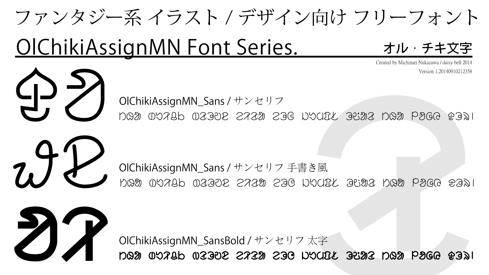
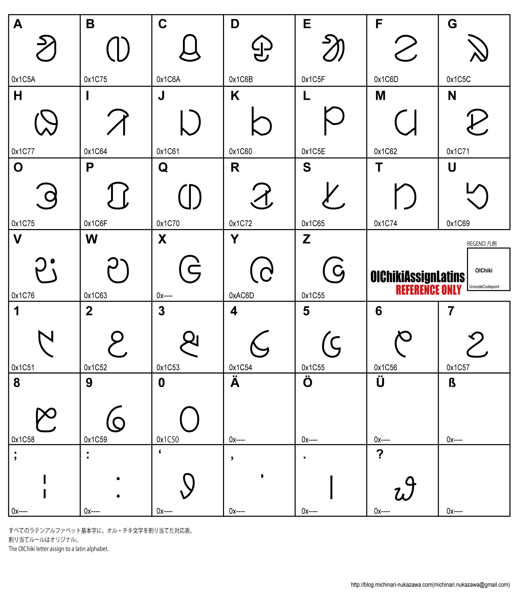

OlChikiAssignMN Series Fonts.
イラスト・デザイン向けオル・チキ文字フォント
OlChikiAssignMN_Series_fontはフリーフォントです。
オル・チキ文字を、イラストやデザインで使いやすいようにフォント化しました。
ラテン・アルファベット(A〜z)でオル・チキ文字を表示するようになっています。

ライセンスなどの詳細は、GitHubの
OlChikiAssignMN_Series_Fonts プロジェクト
ページをご覧ください。
フォントのダウンロード
"daisy bell"公式フリーフォント シリーズ配布ページ
から、最新版をダウンロードしてください。
フォントサンプル
OlChikiAssignNM_Sans
スタンダードなオル・チキ文字の形をしたサンセリフ・フォントです。
OlChikiAssignNM_SansRoundedScript
サンセリフ・フォントで端を丸めて、さらに手書き風にしたフォントです。
OlChikiAssignNM_SansRounded
線幅を太くしたオル・チキ文字です。
オル・チキ文字の割り当て
オル・チキ文字とラテンアルファベットの対応表は、以下のとおりです。
(フォントをダウンロードした際に、この対応表が一緒に入っています。)

LICENCE:
Please read to
OlChikiAssignMN_Series_Fonts
/README.md
blog: blog.michinari-nukazawa.com
mail: michinari.nukazawa@gmail.com